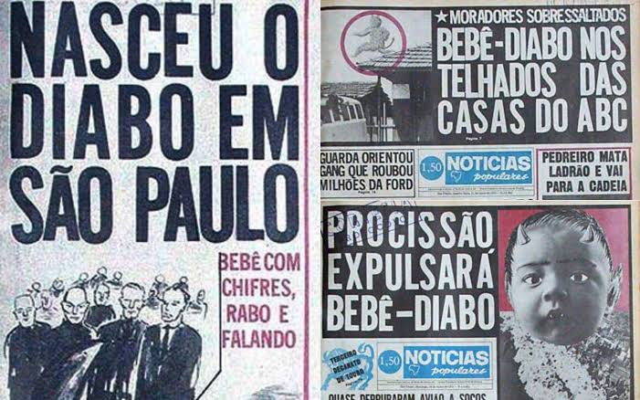

O Bebê-Diabo do ABC

Bebê-Diabo do ABC foi uma famosa lenda urbana e um dos maiores casos de sensacionalismo da imprensa brasileira, criado em maio de 1975 pelo jornal Notícias Populares.
O que foi a história?
- A manchete:
No dia 11 de maio de 1975 (um domingo de Dia das Mães), o Notícias Populares estampou na capa a manchete "Nasceu o diabo em São Paulo". - A descrição fantástica:
O jornal inventou que um bebê teria nascido em um hospital de São Bernardo do Campo (no ABC Paulista) com chifres pontiagudos, rabo, corpo cheio de pelos e olhos ferozes. A suposta criatura teria nascido falando, ameaçado a mãe e os médicos de morte, rasgado travesseiros e fugido do hospital. - A repercussão:
A história foi publicada por 27 dias seguidos, rendendo contos absurdos — como o bebê correndo atrás de táxis, andando por telhados, assustando rituais religiosos e até a participação de figuras como Zé do Caixão na "caçada" à criatura. - O impacto nas vendas:
Aproveitando-se do pânico e da crendice popular, a tiragem diária do jornal (que era de cerca de 70 mil exemplares) saltou para a marca dos 150 mil a 200 mil jornais vendidos.
A realidade por trás do boato
- A origem:
A história começou a partir de boatos espalhados em bares e hospitais de São Bernardo do Campo sobre uma criança que teria nascido com problemas congênitos. - Condição médica:
Segundo levantamentos posteriores (como análises de médicos da época), o recém-nascido real possuía malformações congênitas (como mielomeningocele ou defeitos na coluna), que foram transformadas pela redação do jornal em uma fábula de terror. - Ficção jornalística:
A equipe do Notícias Populares admitiu com o tempo que a maior parte do enredo foi aumentada, enfeitada ou inventada pelos repórteres para sustentar as vendas e preencher as edições diárias.
O caso virou um marco histórico do jornalismo marrom no Brasil e é frequentemente estudado como um dos primeiros grandes fenômenos de histeria coletiva e fake news em massa do país.